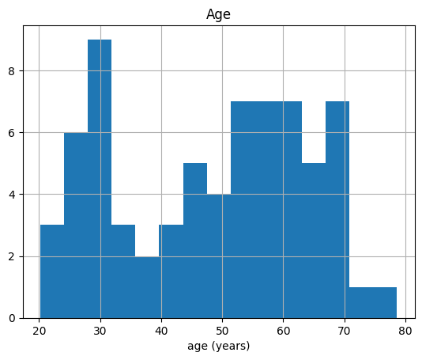
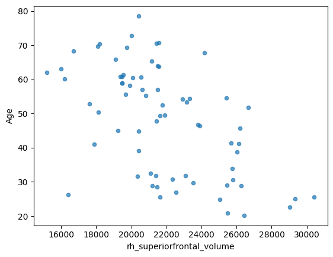
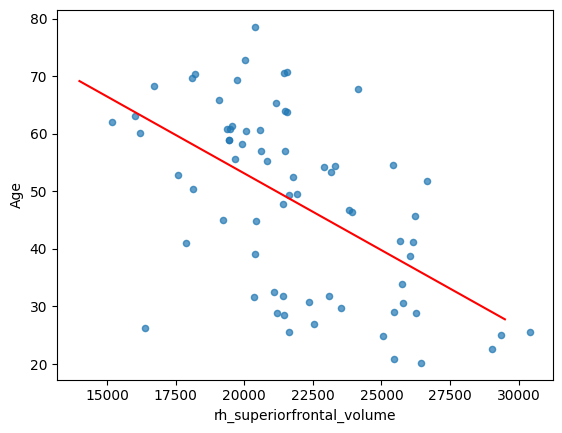
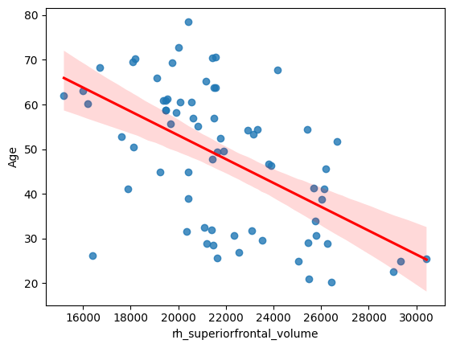
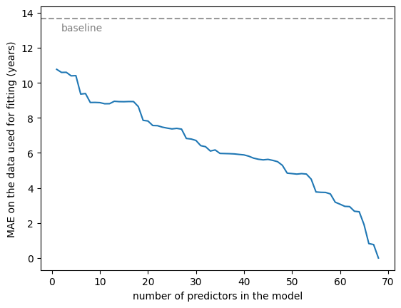
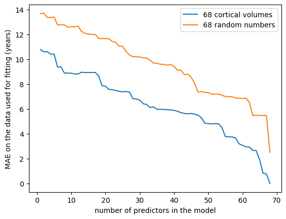
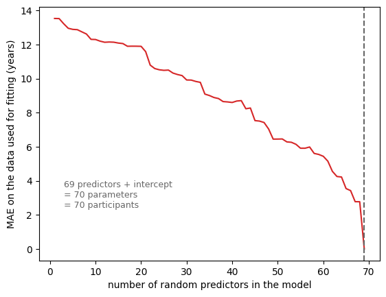

Linear Models in Action#
Here we put linear models to work on the IXI data, and meet the first villain of predictive modelling: overfitting.
We start, as every notebook in this book does, by loading the data, shuffling it with a fixed seed (see chapter 1 for why), and naming the target and the features.
import numpy as np
import pandas as pd
import seaborn as sns
import matplotlib.pyplot as plt
import statsmodels.api as sm
import statsmodels.formula.api as smf
DATA_URL = "https://raw.githubusercontent.com/pni-lab/predmod_lecture/master/ex_data/IXI/ixi.csv"
ixi = pd.read_csv(DATA_URL).sample(frac=1, random_state=42).reset_index(drop=True)
TARGET = 'Age'
FEATURES = [c for c in ixi.columns if c.endswith('_volume')]
# for this chapter we deliberately work with a small study: 70 participants
df = ixi.iloc[:70].copy()
print(f'{len(df)} participants, {len(FEATURES)} candidate features')
70 participants, 68 candidate features
A baseline: the simplest possible prediction#
Before building anything, it is worth asking what a trivial prediction achieves. The simplest possible guess for someone’s age, if we know nothing about them, is the average age of the group:
df.hist('Age', bins=15)
plt.xlabel('age (years)')
plt.show()
mean_age = df[TARGET].mean()
print(f'mean age: {mean_age:.1f} years')

mean age: 48.2 years
baseline_predictions = np.full(len(df), mean_age)
def mae(y_true, y_pred):
return np.mean(np.abs(np.asarray(y_true) - np.asarray(y_pred)))
def rmse(y_true, y_pred):
return np.sqrt(np.mean((np.asarray(y_true) - np.asarray(y_pred)) ** 2))
print(f'baseline MAE : {mae(df[TARGET], baseline_predictions):.2f} years')
print(f'baseline RMSE: {rmse(df[TARGET], baseline_predictions):.2f} years')
baseline MAE : 13.67 years
baseline RMSE: 15.70 years
Roughly fourteen years off, on average. That is our yardstick: any model worth the name has to beat it, and “our model achieves an MAE of 10 years” means nothing until you know what the trivial guess achieves on the same data.
Note
Baselines like this are standard practice outside biomedicine. In weather forecasting, the benchmark that early models struggled to beat was persistence: predicting that tomorrow will be like today. Many published prediction models in the clinical literature are never compared to any baseline at all, which makes their performance impossible to judge.
Exercise 2.1
Try df['Age'].mean(), df['Age'].median() and df.describe(). Does predicting the median
age give a better or worse MAE than predicting the mean? Why?
Solution
print(mae(df[TARGET], np.full(len(df), df[TARGET].mean())))
print(mae(df[TARGET], np.full(len(df), df[TARGET].median())))
The median is usually at least as good, and often better. The reason is worth knowing: the constant that minimizes the mean absolute error is the median, while the constant that minimizes the squared error is the mean. The error measure you choose changes which prediction counts as best — which is exactly why least squares gives you the mean-like answer.
One predictor
We can surely do better by using something we know about each person. From chapter 1 we know that cortical volume declines with age more or less everywhere. Let’s use one region:
df.plot.scatter(x='rh_superiorfrontal_volume', y='Age', alpha=0.7)
plt.show()

We fit a linear model with ols (ordinary least squares) from
statsmodels. The syntax mirrors R: a formula, then the data.
fitted_model = smf.ols('Age ~ rh_superiorfrontal_volume', data=df).fit()
fitted_model.summary()
| Dep. Variable: | Age | R-squared: | 0.305 |
|---|---|---|---|
| Model: | OLS | Adj. R-squared: | 0.294 |
| Method: | Least Squares | F-statistic: | 29.79 |
| Date: | Thu, 24 Sep 2026 | Prob (F-statistic): | 7.33e-07 |
| Time: | 12:14:24 | Log-Likelihood: | -279.35 |
| No. Observations: | 70 | AIC: | 562.7 |
| Df Residuals: | 68 | BIC: | 567.2 |
| Df Model: | 1 | ||
| Covariance Type: | nonrobust |
| coef | std err | t | P>|t| | [0.025 | 0.975] | |
|---|---|---|---|---|---|---|
| Intercept | 106.5395 | 10.807 | 9.859 | 0.000 | 84.975 | 128.104 |
| rh_superiorfrontal_volume | -0.0027 | 0.000 | -5.458 | 0.000 | -0.004 | -0.002 |
| Omnibus: | 1.207 | Durbin-Watson: | 2.333 |
|---|---|---|---|
| Prob(Omnibus): | 0.547 | Jarque-Bera (JB): | 1.270 |
| Skew: | -0.276 | Prob(JB): | 0.530 |
| Kurtosis: | 2.639 | Cond. No. | 1.50e+05 |
Notes:
[1] Standard Errors assume that the covariance matrix of the errors is correctly specified.
[2] The condition number is large, 1.5e+05. This might indicate that there are
strong multicollinearity or other numerical problems.
This is the output a “classical” analysis would stop at: a significant negative association, with an \(R^2\) telling us how much of the variance in age is explained. Let’s instead pull out the coefficients and use them to predict.
beta = fitted_model.params
beta
Intercept 106.53953
rh_superiorfrontal_volume -0.00267
dtype: float64
The coefficients are the \(\beta_0\) and \(\beta_1\) of the equation \(y_{i} = \beta_{0} + \beta_{1}x_{i} + \varepsilon_{i}\), so we can predict the age of a hypothetical new participant whose right superior frontal cortex has a volume of 25,000 mm³ with nothing more than arithmetic:
x_new = 25000
y_hat = beta.iloc[0] + beta.iloc[1] * x_new
print(f'predicted age: {y_hat:.1f} years')
predicted age: 39.8 years
Do that for a whole range of volumes and you have drawn the regression line:
x_grid = np.arange(14000, 30000, 500)
y_grid = beta.iloc[0] + beta.iloc[1] * x_grid
ax = df.plot.scatter(x='rh_superiorfrontal_volume', y='Age', alpha=0.7)
sns.lineplot(x=x_grid, y=y_grid, color='red', ax=ax)
plt.show()

Seaborn draws the same thing in one line, with a confidence band:
sns.regplot(x='rh_superiorfrontal_volume', y='Age', data=df, line_kws={'color': 'red'})
plt.show()

Note
You may have noticed that the predictors are not normally distributed. Normality and the other assumptions of linear regression matter a great deal for inference — for p-values and confidence intervals to mean what they claim. They are not preconditions for a model to predict well. A properly validated predictive model is judged by its errors on unseen data, and that judgement does not rest on distributional assumptions. This is one of the genuine liberations of the predictive framework, and we will make use of it.
How much did one brain region buy us?
y_hat_all = fitted_model.predict(df)
print(f'baseline (mean age) MAE: {mae(df[TARGET], baseline_predictions):5.2f} years')
print(f'one-region model MAE: {mae(df[TARGET], y_hat_all):5.2f} years')
print(f'one-region model RMSE: {rmse(df[TARGET], y_hat_all):5.2f} years')
baseline (mean age) MAE: 13.67 years
one-region model MAE: 10.77 years
one-region model RMSE: 13.09 years
A few years better than the trivial guess. Modest, but real.
More predictors#
We have 67 more regions sitting unused. The obvious next move is to add them.
five_regions = ['rh_superiorfrontal_volume', 'lh_bankssts_volume',
'lh_caudalanteriorcingulate_volume', 'lh_caudalmiddlefrontal_volume',
'lh_cuneus_volume']
model_5 = smf.ols('Age ~ ' + ' + '.join(five_regions), data=df).fit()
y_hat_5 = model_5.predict(df)
print(f'five-region model MAE: {mae(df[TARGET], y_hat_5):5.2f} years')
five-region model MAE: 10.41 years
Better again. So let’s be systematic: add regions one at a time, and watch the error fall.
def fit_and_score(feature_columns, data=df):
"""Fit OLS on the given columns and return the MAE on the same data."""
X = sm.add_constant(data[list(feature_columns)].values)
model = sm.OLS(data[TARGET].values, X).fit()
return mae(data[TARGET], model.predict(X))
# a fixed, nested sequence of feature sets: the first k features, for k = 1 ... 68
# we keep looking at the same region first, so that the curve below starts from the model we have
# just fitted, and then adds the other 67 in a fixed order
ORDERED_FEATURES = ['rh_superiorfrontal_volume'] + [f for f in FEATURES if f != 'rh_superiorfrontal_volume']
n_features = range(1, len(FEATURES) + 1)
mae_real = [fit_and_score(ORDERED_FEATURES[:k]) for k in n_features]
sns.lineplot(x=list(n_features), y=mae_real)
plt.xlabel('number of predictors in the model')
plt.ylabel('MAE on the data used for fitting (years)')
plt.axhline(mae(df[TARGET], baseline_predictions), ls='--', color='0.6')
plt.text(2, mae(df[TARGET], baseline_predictions) - 0.7, 'baseline', color='0.5')
plt.show()
print(f'lowest MAE reached: {min(mae_real):.2f} years')

lowest MAE reached: 0.00 years
The error falls steadily, and with all 68 regions in the model it has collapsed to essentially zero. Age predicted to within a small fraction of a year from brain structure alone!
This should worry you. The best published brain-age models — deep networks trained on tens of thousands of scans — report mean absolute errors in the region of 3 to 5 years, with MAE = 2.71 ± 2.10 among the strongest results [7]. We have just beaten the state of the art with 70 participants and a linear model.
The same experiment, with nonsense#
To see what is actually happening, let’s repeat the experiment with predictors that are guaranteed to carry no information about age at all: random numbers.
rng = np.random.default_rng(seed=42)
random_features = pd.DataFrame(
rng.normal(size=(len(df), len(FEATURES))),
columns=[f'noise_{i}' for i in range(len(FEATURES))],
)
random_features[TARGET] = df[TARGET].values
mae_random = [fit_and_score(random_features.columns[:k], data=random_features)
for k in n_features]
sns.lineplot(x=list(n_features), y=mae_real, label='68 cortical volumes')
sns.lineplot(x=list(n_features), y=mae_random, label='68 random numbers')
plt.xlabel('number of predictors in the model')
plt.ylabel('MAE on the data used for fitting (years)')
plt.legend()
plt.show()
print(f'lowest MAE with real features : {min(mae_real):.2f} years')
print(f'lowest MAE with random features: {min(mae_random):.2f} years')

lowest MAE with real features : 0.00 years
lowest MAE with random features: 2.51 years
Look at what the random curve does. Predictors that cannot possibly know anything about age still drive the error down from the 13.7-year baseline to under three years, simply by being added to the model. Nothing was learned; the model merely acquired enough free parameters to bend itself through the 70 points in front of it.
The real features do stay below the noise features throughout, and that vertical gap is the one part of the picture that reflects genuine information about ageing. But the gap is a small fraction of the total drop. Most of what looks like improvement in the left-hand curve is the same memorization that produced the right-hand one — and from the fitting error alone, you cannot tell the two apart.
How far does this go?#
We stopped at 68 random predictors only because that is how many brain regions we have. Nothing stops us generating more. So let’s draw a fresh, wider set of noise — 69 columns this time — and watch what happens as the number of free parameters approaches the number of participants.
# a fresh, wider draw of noise: one column short of one per participant
more_noise = pd.DataFrame(
rng.normal(size=(len(df), len(df) - 1)),
columns=[f'noise_{i}' for i in range(len(df) - 1)],
)
more_noise[TARGET] = df[TARGET].values
n_noise = range(1, len(df))
mae_more = [fit_and_score(more_noise.columns[:k], data=more_noise) for k in n_noise]
sns.lineplot(x=list(n_noise), y=mae_more, color='#d62728')
plt.axvline(len(df) - 1, ls='--', color='0.4')
plt.text(3, max(mae_more) * 0.18,
f'{len(df) - 1} predictors + intercept\n= {len(df)} parameters\n= {len(df)} participants',
color='0.4', fontsize=9)
plt.xlabel('number of random predictors in the model')
plt.ylabel('MAE on the data used for fitting (years)')
plt.show()

def fit_summary(k):
"""MAE and R-squared of an OLS fit on the first k random predictors."""
X = sm.add_constant(more_noise[more_noise.columns[:k]].values)
fitted = sm.OLS(df[TARGET].values, X).fit()
predictions = fitted.predict(X)
return {'random predictors': k,
'free parameters': k + 1,
'MAE (years)': f'{mae(df[TARGET], predictions):.6f}',
'R-squared': f'{fitted.rsquared:.6f}'}
pd.DataFrame([fit_summary(k) for k in [20, 40, 60, 67, 68, 69]])
| random predictors | free parameters | MAE (years) | R-squared | |
|---|---|---|---|---|
| 0 | 20 | 21 | 11.892333 | 0.180820 |
| 1 | 40 | 41 | 8.596495 | 0.547342 |
| 2 | 60 | 61 | 5.438402 | 0.823156 |
| 3 | 67 | 68 | 2.773354 | 0.948718 |
| 4 | 68 | 69 | 2.770694 | 0.948719 |
| 5 | 69 | 70 | 0.000000 | 1.000000 |
At 69 random predictors — 70 free parameters, for 70 participants — the error does not merely get small. It becomes zero, and \(R^2\) becomes 1. The model reproduces every participant’s age to the last decimal place, from numbers drawn out of a random number generator. (The printed values are zero and one to six decimal places; the residuals are around \(10^{-13}\), which is floating-point arithmetic’s way of writing zero.)
This is not a numerical curiosity, it is a fact about linear algebra, and it is worth stating precisely. The fitted values \(\boldsymbol{X}\boldsymbol{\beta}\) can be any vector in the column space of \(\boldsymbol{X}\) — the set of all weighted sums of its columns. With \(n\) observations, \(\boldsymbol{y}\) lives in an \(n\)-dimensional space. Once \(\boldsymbol{X}\) has \(n\) linearly independent columns, that column space is the whole space, so it contains \(\boldsymbol{y}\) — and a \(\boldsymbol{\beta}\) reproducing \(\boldsymbol{y}\) exactly is guaranteed to exist.
Note what that argument never mentions: the data. It holds for any target vector and any predictors. Age, shoe size, lottery numbers; cortical volumes, random noise, the digits of π. A model with as many parameters as observations fits everything perfectly, and therefore its perfect fit tells you nothing whatsoever.
We stopped the curve at 69 predictors, because past that point the perfect fit stops being a single answer: with more columns than observations there are infinitely many coefficient vectors that reproduce the data exactly, and which one you get depends on the numerical method rather than on anything in the data. Software will usually warn you about a rank-deficient design matrix here. That regime — far more parameters than observations — is the everyday situation in neuroimaging and genomics, and chapter 4 is about how to work in it without pretending the problem away.
The extreme case is clarifying, but it is not a special case. Every model in the region approaching it is doing a milder version of the same thing: spending degrees of freedom to bend through the particular points in front of it. The fit gets better, smoothly, all the way up — and at no point along that curve does the improvement mean the model has learned anything.
Overfitting#
Overfitting is what we are looking at: the model is using random variation in the predictors to reproduce the particular quirks of the participants in front of it, rather than any relationship that holds in general. The more predictors a model has — the more complex it is — the more capacity it has to do this, and the smaller the dataset, the less it has to work with except quirks.
Note
A helpful, if imperfect, metaphor: the model is memorizing the data rather than learning the relationship. A student who has memorized last year’s exam paper will score brilliantly on last year’s exam paper.
The more predictors a model has, the more capacity it has to do this — and as we have just seen, that capacity reaches its absolute limit when the number of parameters reaches the number of observations. What makes overfitting dangerous is not that limit, which is obvious once you have seen it, but everything on the way there, which is not.
Exercise 2.2
The two curves both fall, but the noise curve falls more slowly, and at 68 predictors it stops at about 2.5 years while the real one reaches zero. Given that neither number reflects any ability to predict, what explains the difference?
Solution
Two things pull in opposite directions.
The real features genuinely carry information about age, which lowers their curve everywhere — that is the effect we want. But they are also highly redundant: regional volumes correlate strongly with each other, largely because people differ in overall head size (Exercise 1.5). Twenty correlated volumes span far fewer than twenty independent directions, so they give the model less freedom to chase noise than twenty independent random variables do.
You can see the redundancy directly:
print(np.corrcoef(df[ORDERED_FEATURES[:20]].values, rowvar=False).mean())
print(np.corrcoef(random_features[random_features.columns[:20]].values, rowvar=False).mean())
So the gap between the curves understates the real information content, because collinearity is handicapping the real features in this particular race. That handicap is a nuisance for interpreting coefficients — but in chapter 4 we will turn it into an advantage on purpose.
Exercise 2.3
Re-run this notebook with df = ixi.iloc[:400] instead of the first 70 participants. How far do
the curves fall now, and where does the “random predictors” curve end up? What does that tell you
about the relationship between sample size and overfitting?
Note
One traditional escape from having many predictors is to avoid multivariate modelling entirely: fit a separate model per predictor, with target and predictor swapped. This mass univariate approach is ubiquitous in, for example, task fMRI. It trades the overfitting problem for a multiple comparisons problem, and it gives up on combining weak predictors into a strong one — which is precisely what we are trying to do.
Where this leaves us#
We cannot judge a model by the error it makes on the data it was fitted to. That number can always be driven to zero, and it tells us nothing about whether the model has learned anything.
On the next page we look at overfitting in some other disguises, so that you recognize it in the wild. Then, in chapter 3, we fix the measurement problem: how to estimate predictive performance in a way that overfitting cannot inflate. Chapter 4 and chapter 5 then tackle the disease itself, by tuning model complexity to the sweet spot between oversimplification and memorization — which is, in one sentence, what machine learning is.
Exercise 2.4
Open this notebook in Colab, load your own dataset, and fit a model with many predictors. Compute the error on the data you fitted. Do you believe it?